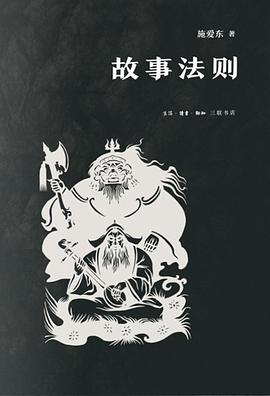

《故事法则》

总体观点
所有的好故事背后都遵循着极其严密的‘底层认知模型’：从灰姑娘到哪吒，从希腊神话到好莱坞大片，人类千百年讲述的故事本质上是对有限叙事母题的不断变奏。
故事从来不是为了还原客观历史真实，而是为了满足人类大脑对因果关系、道德正义与心理补偿的本能渴望；凡是违背故事法则的真实往往被历史淘汰，而符合故事法则的虚构却代代相传。
理解故事法则，不仅能让我们看懂文学、影视与民间传说的操纵机制，更能让我们敏锐洞察现代传媒中的舆论叙事与集体无意识的构建逻辑。
核心观点
-
1. 人类大脑是‘天生的故事处理器’，无法容忍没有因果的巧合
现实世界充满无意义的混乱与随机性，而故事的核心使命就是给偶然赋予必然，将苦难解释为通往英雄加冕的试炼。
真实历史中岳飞因政治大局与宋高宗猜忌被杀，但在民间故事里必须塑造一个绝对反派秦桧跪在岳王庙前受万人唾骂以实现因果正义。 -
2. ‘灰姑娘母题’是人类跨越文明界限的终极心理补偿梦境
遭受家庭打压的无辜幼女，凭借外在神秘力量助力或内在美德，在全场瞩目的仪式中实现阶层大逆转与残酷复仇。
中国唐代段成式《酉阳杂俎》中的‘叶限姑娘’与欧洲格林童话‘灰姑娘’结构高度一致，证明人类底层补偿心理的跨文化相通。 -
3. 英雄之旅法则：离开熟悉世界、穿越生死考验并带回火种
启程、启蒙、归来三幕式结构是一切叙事的大骨架，主角必须经历导师指引、跨越深渊之门与自我牺牲，方能完成人格涅槃。
《星球大战》卢克受欧比旺召唤离开农场、《西游记》孙悟空大闹天宫后受观音点化踏上取经路，结构如出一辙。 -
4. ‘巧合法则’：巧合只能用来制造危机与困境，绝不能用来化解危机
如果主角突然倒大霉是因为巧合，观众会觉得合情合理并捏一把汗；但如果主角最后靠天降巧合获救，故事就会瞬间崩塌为拙劣说教。
泰坦尼克号主角碰巧撞上冰山令观众心碎，但若最后主角快冻死时天降一艘飞碟把人救走，整部电影立刻沦为大烂片。 -
5. 反派的高度决定了英雄的厚度：没有强大的影子，就没有耀眼的光芒
扁平邪恶的反派只带来廉价的正邪对抗，拥有合理动机、甚至在某种逻辑上比主角更坚决的悲剧反派才能激发出崇高的悲剧美感。
《蝙蝠侠：黑暗骑士》中的小丑彻底解构了哥谭市自诩文明的正义面具，将蝙蝠侠逼入自我放逐的道德绝境，成就封神经典。 -
6. 民间传说中的‘滚雪球效应’：历史事件如何一步步被故事法则吞噬改造
真实的平淡细节在代代相传的讲述中被剔除，夸张的奇迹、戏剧性的反转与民众的情感投射不断附着其上，最终彻底取代真实历史。
孟姜女传说最初在《左传》中仅是杞梁之妻‘迎柩于郊抚尸而哭’，千年流传中最终演化为‘哭倒万里长城八百里’的旷世奇迹。
全书结构
-
绪论 民间文学的共时研究法
阐释民间故事研究的共时研究范式、形态学理论与口头程式理论，剖析为何共时研究必须排斥历时考据，确立故事演变的形式法则。
剖析普罗普《故事形态学》，指出故事虽然角色千变万化，但功能项（Functions）是有限且序列固定的最小叙事行动单元。 -
第一章 理想故事的游戏规则
界定故事的封闭特征、最简结构与稳定的游戏目标，揭示叙事动力源于在初始条件与既定目标之间制造阻碍，以及打破常规促成情节反转。
解构“灰姑娘”型故事的通则：继母刁难设置不可能完成的拣豆任务构成了障碍，仙女赋予水晶鞋则是打破常规的助力工具。 -
第二章 大团圆何以成为元结局
辩护中国传统叙事中备受知识分子批判的大团圆结局，论证大团圆是满足世俗心理游戏闭环的“元结局”，而非国民劣根性。
从民间听众心理机制证明：通俗故事如同通关游戏，只有主人公“终成眷属并加冕为王”才能释放叙事紧张并带来心理犒赏。 -
第三章 民间故事的稳定性与自由度
阐释同题故事的结构节点（Node）与附着性母题的演化关系，论证故事节点是最大公约数，偏离节点将导致故事在口传中迅速消亡。
分析“孟姜女哭长城”故事在两千年流传中的变异，范喜良死因与哭倒城墙作为固定核心节点不可动摇，而千里送寒衣等细节则享有充分附着自由度。 -
第四章 民间故事的无序生长及其最优策略
提出“故事生命树”的枝端模型，揭示民间艺人在信息空白处为弥补逻辑断裂所展开的无序生长，以及主流枝干的竞择胜出机制。
当说书人讲到主角被困荒岛的情节缺失时，不同艺人会编出神鹰相救或暗道逃生等枝杈，唯有最符合听众审美预期的路径能作为主流传承下来。 -
第五章 史诗可持续生长机制与叠加单元
剖析藏族《格萨尔王传》与印度《罗摩衍那》等长篇英雄史诗如何通过“叠加单元”运算法则实现如同积木般的无限动态扩充。
史诗说唱艺人通过“降妖-夺宝-安民”的标准叠加模块，可以根据演出赏钱与听众热情随时插入新的征战单元，使史诗篇幅延长数倍。 -
第六章 史诗英雄塑造对武侠小说的影响
论述古代英雄史诗的叙事母题如何被近现代武侠小说所继承，剖析旧瓶装新酒的民间趣味与节外生枝的叙事策略。
比较《水浒传》梁山好汉形象与金庸《射雕英雄传》中江南七怪、郭靖的成长弧线，展现口头史诗英雄范式在长篇小说中的现代还魂。 -
第七章 英雄形象塑造中的善恶对照模式
解构传统小说塑造英雄的核心法则——双人善恶对照模式，探讨质朴人性与机巧人性的对立张力及兄弟对照模式的有限变异。
拆解金庸武侠小说中郭靖与杨康的对照设置：同一时代背景与师门机缘下，大智若愚的憨厚正道与机巧钻营的背叛构成了对称的性格光谱。 -
第八章 英雄形象塑造中的“杀嫂”模式
深入剖析古典小说中“亲近女色非好汉”的禁欲伦理，梳理从水浒“结义杀家”到“武松杀嫂”的演化，以及金庸小说对杀嫂母题的改良借用。
从水浒传武松杀潘金莲、杨雄石秀杀潘巧云，分析中国传统江湖绿林以牺牲女性作为兄弟缔结血盟“投名状”的残酷男性情义原型。 -
第九章 五行思维下的唐代月宫意象
剖析中国古代阴阳五行思维对唐代诗歌与神话叙事的深层塑形，揭秘月神西金属性如何孕育唐玄宗梦游广寒宫的瑰丽奇幻意象。
考证唐代文人借西方庚辛金之白润赋予月宫蟾蜍、玉兔、桂树与白绢清冷质感，展示哲学宇宙观如何直接具象化为古典文学的核心视觉意象。